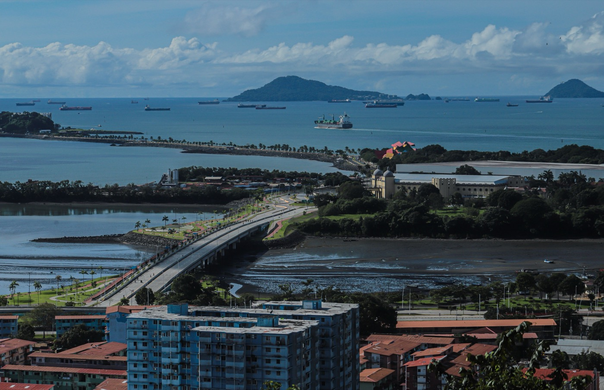
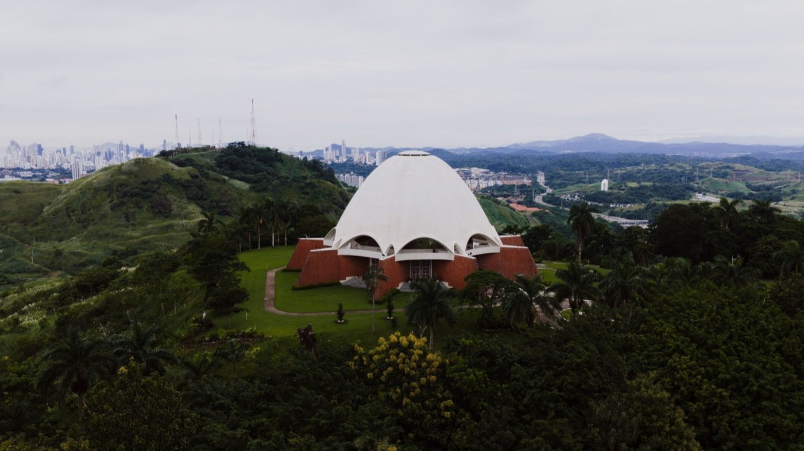
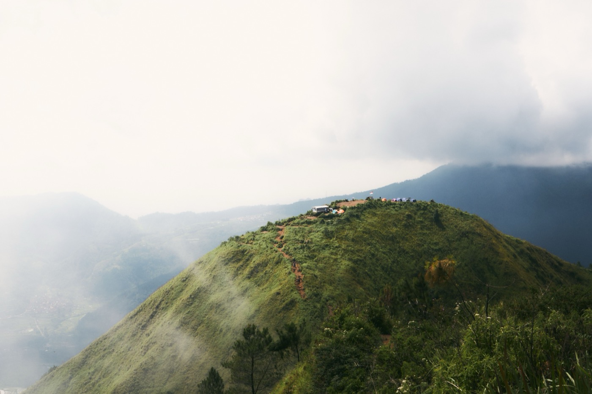

Panama Residency Requirements
Four routes, what each actually costs, and the deadline two months away that raises one of them by $200,000.
Panama has one of the most accessible residency systems in the world, and most of what you will read about it is out of date. Thresholds moved in 2021 and again in 2024, one of them moves again in October, and the route that suits you depends far more on where your passport is from and what kind of income you have than on how much money you hold.
At a glance
- Four routes. Pensionado needs no capital at all. Friendly Nations needs $200,000 and the right passport. Qualified Investor needs $300,000 and grants permanent residency immediately.
- One deadline that matters. The investor route's real estate minimum rises from $300,000 to $500,000 on 15 October 2026. Two months away as of writing.
- Pensionado is the best deal nobody qualifies for. $1,000 a month in lifetime pension income, permanent residency immediately, and the most generous retiree discount schedule anywhere. But it has to be a pension.
- Your passport can close a door. Friendly Nations covers about 50 countries. Outside that list the route does not exist for you, whatever your finances.
- You cannot file it yourself. Panamanian law requires every immigration application to go through a licensed local attorney.
- Citizenship after five years of permanent residence, on every route.
The four routes
Start here. Most people spend weeks reading about the wrong one.
| Route | What it takes | Status granted | Speed |
|---|---|---|---|
| Pensionado | $1,000/mo lifetime pension, or $750 with $100,000+ of Panamanian property. Plus $250/mo per dependant. | Permanent, immediately | A few months |
| Friendly Nations | Passport from one of ~50 listed countries, plus $200,000 in property, a $200,000 three-year bank CD, or a Panamanian job contract | Two years provisional, then permanent | Filing in as little as 72 hours |
| Qualified Investor | $300,000 in real estate free of liens (until 15 Oct 2026), $500,000 in securities, or $750,000 on deposit. Five-year hold. | Permanent, immediately, no provisional phase | 30 to 90 days |
| Reforestation / business | Certified reforestation investment, or a Panamanian company employing locals | Provisional, then permanent | Varies |

The 15 October deadline
Executive Decree 193 of October 2024 set the Qualified Investor Visa's real estate minimum at $300,000 only until 15 October 2026. After that it becomes $500,000, permanently.
That is an extra $200,000 of capital locked up for five years, for an identical outcome. It applies only to the real estate route. The securities and bank deposit options are unaffected.
Two honest caveats before you rush
It has slipped before. The Panamanian government has postponed this increase close to the deadline in the past. The current stance holds October, but nobody should treat it as immovable.
You are already at the edge. The investment must be fully realised, meaning funds transferred from abroad and title or a promise of sale documented, and the application filed with the National Migration Service before the date. Practitioners recommend completing a month early. If you are not already under contract with funds ready to move, the honest answer is that this window has probably closed for you, and Friendly Nations at $200,000 is the better route anyway.
A deadline is a bad reason to buy property in a country you have not lived in. If you were investing at this level regardless, the arithmetic is real. If you were not, do not let a date decide.

Pensionado, the best deal nobody qualifies for
Panama's retiree programme, set out in Law 6 of 1987, is the most generous statutory discount schedule attached to any residency programme in the world. It requires no capital. And there is no minimum age, which surprises people. Anyone 18 or over with a qualifying lifetime pension can apply.
| Discount | Applies to |
|---|---|
| 50% | Entertainment: cinema, theatre, concerts, sport |
| 50% / 30% | Hotels, Monday to Thursday / Friday to Sunday |
| 30% | Public transport: bus, boat, train |
| 25% | Airline tickets, restaurants, electricity to 600 kWh, telephone |
| 20% | Medical consultations, professional services, prosthetics |
| 15% | Hospital bills without insurance, dental and eye exams, personal loans |
| 1% | Off the mortgage interest rate on your own home |
Used routinely, a couple recovers $150 to $350 a month in real terms. On a $2,400 budget that is not a rounding error.
The word pension is doing the work here. It must come from a government, a company scheme, a trust, a mutual fund, a bank or an insurance company, and it must be for life. Rental income does not qualify. Investment income does not qualify. Self-employment income does not qualify, however large. This is the single most common reason a pensionado application fails, and people find out late.
Friendly Nations, the workhorse
Since the 2021 restructuring under Executive Decrees 197 and 226, this route requires a real economic tie to Panama. Opening a bank account with a small balance no longer suffices.
- $200,000 in real estate, or
- $200,000 in a three-year Panamanian certificate of deposit, or
- A Panamanian employment contract, with the employer registered with social security
Roughly 50 countries qualify, including the United States, Canada, the United Kingdom, Australia and most of the EU. Filing can begin within days, and provisional residency has been granted in as little as 72 hours. There is no minimum stay. Spouse, children under 25 in full-time study, and dependent parents can be included.
Budget $4,500 to $9,700 in legal and government fees for a single applicant.
Qualified Investor, the fast one
Established by Executive Decree 722 in 2020 and amended by Decree 193 in 2024, this is the only route that grants permanent residency with no provisional phase.
| Option | Amount | Hold period |
|---|---|---|
| Real estate, free of liens (pre-sale projects qualify) | $300,000 to 15 Oct 2026, then $500,000 | 5 years |
| Panamanian securities via a licensed brokerage | $500,000 | 5 years |
| Fixed-term bank deposit | $750,000 | 5 years |
Add a $5,000 application fee to the National Treasury and a $5,000 repatriation deposit. Spouses may buy jointly provided each contributes at least $150,000. Processing runs 30 to 90 days from a complete file, and you will travel to Panama twice, once to file and once to collect the residency card.
Our investor visa guide covers the property side in detail, and Boquete real estate has current pricing if the highlands are where you are looking.

What disqualifies people
Four things end applications, and all four are avoidable if you know them early.
- Income that is not a pension. The pensionado route is strict about this and it is where most failed applications die.
- The wrong passport. Friendly Nations is nationality-gated. Outside the list the route simply does not exist for you, regardless of your finances.
- A mortgage on the qualifying property. The investor route requires the investment be free of liens and made with your own funds. Financing disqualifies it.
- Two years away. Permanent residency lapses if you spend more than two consecutive years outside Panama. The investor route also expects you to prove annually that the investment is still in place.
And one procedural rule that catches people: under Decree Law 3 of 2008, every immigration application must be filed through a licensed Panamanian attorney. You cannot self-file, and the online forms you may find are not a substitute.
Citizenship after five years
All four routes lead to the same place. After five years of permanent residence you may apply for naturalisation, subject to the usual requirements including a Spanish language and civics examination.
Worth knowing before you build a plan around it: Panama does not broadly recognise dual nationality, and naturalising generally requires formally renouncing your previous citizenship. For most Americans that makes the passport a theoretical endpoint rather than a practical goal. Residency, with territorial tax treatment on foreign income, is where the actual benefit sits.
Residency and a house are two different projects.
Plenty of people buy the wrong property because it hit a residency threshold, then live in it for a decade. The threshold is a number. The house is where you wake up. We build fixed-price homes across Panama and Costa Rica, and we are happy to tell you when the property that qualifies you is not the property you should own.
Sources and what to verify
Verified 14 August 2026. Immigration thresholds move, and two of the figures here moved within the last eighteen months.
- Servicio Nacional de Migración at migracion.gob.pa is the authority on every route below.
- Friendly Nations is governed by Executive Decrees 197 and 226 of 2021.
- Qualified Investor is governed by Executive Decree 722 of 2020 as amended by Decree 193 of 2024, which set the October 2026 date.
- Pensionado discounts are set by Law 6 of 1987.
- Tax treatment is published by the Dirección General de Ingresos.
The one figure to confirm before acting is the October date. It has been deferred before, and a licensed Panamanian immigration attorney will know its current status better than any published guide, including this one.